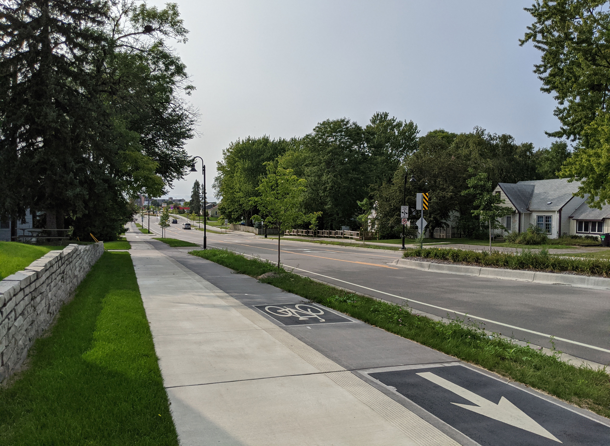

Bloomington is preparing to perform a corridor study on 102nd Street between Normandale Boulevard and France Avenue in 2027. The study will lay out what will be constructed when the roadway undergoes a major construction project in 2031, determining the future of the street for decades.
102nd Street is fronted by three schools - Olson Elementary, Olson Middle, and Jefferson High - and single-family residential neighborhoods. Additionally, it connects to the France Avenue trail at its eastern end and the planned Normandale Boulevard trail at its western end, linking it to two commercial centers. This includes places like grocery stores and restaurants, visited by families every day.
Fitting this context, we strongly believe 102nd Street should be rebuilt with a design that allows everyone to safely navigate the street.

102nd Street - existing conditions (Google Maps)
85th pct. speed
Speed limit: 30 mph
Crashes
Last 10 years
"Crossing safety is a concern"
2016; parents who didn't let their child walk/bike to school
"Speed of traffic is a concern"
2016; parents who didn't let their child walk/bike to school
"Walking/biking to school could be good for my child"
2016; parents who didn't let their child walk/bike to school
Students walking to school
2016
Students biking to school
2016
Children under 5 living on the 102nd Street corridor
2020-2024 ACS

Our proposal (streetmix.net)
Preliminary planning documents show that the city envisions a four-to-three lane conversion. For pedestrian and bike facilities, a shared-use path and on-street bike lanes are envisioned.
We are strongly in favor of the lane conversion, which will calm traffic and make crossing the street safer. However, we believe that neither a shared-use path nor on-street bike lanes are adequate bicycle facilites. Shared-use paths will create conflicts between pedestirans and cyclists due to their different speeds, and the high volume of traffic from students. On-street bike lanes provide no protection but paint from 30 mph+ traffic, including new student drivers.
Instead, separate sidewalks and sidewalk-level protected bike lanes should be built, which would provide high-quality, safe, and comfortable infrastructure for all users (bottom image). According to the National Association of City Transportation Officials's Designing for All Ages and Abilities guide, this is the only type of bicycle facility that is appropiate for a street with speeds and volumes like 102nd Street. This design would also fit within the existing 80-foot right-of-way.
Leave a pin on the comment map.
Support wider sidewalks, sidewalk-level protected bike lanes, a four-to-three lane conversion, and safer crossings.
Email Assistant Traffic Engineer Amy Marohn.
Support wider sidewalks, sidewalk-level protected bike lanes, a four-to-three lane conversion, and safer crossings. Email: amarohn@bloomingtonmn.gov
Get project updates by joining our newsletter.
As we learn more about the study, we'll show you how to best advocate for a safe street on 102nd.

66th Street in Richfield (Sean Hayford Oleary)